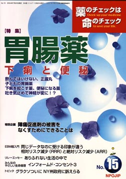

No.15 特集 胃腸薬 2004年7月 発行
食べ物を消化し栄養分として吸収している臓器が「胃腸」。
前号では、「胃薬」とくに胃潰瘍の薬に重点をおいて、消化器病が専門の谷田憲俊さんに詳しく解説していただきました。胃腸薬の中でも、胃・十二指腸潰瘍の薬は確実に効く本物の「薬」がありますが、一方で、日本には外国では通用しない「抗潰瘍剤」「胃炎の薬」と称するものがいまだによく使われています。そこで、本当に効く「必要な薬」と、効かない、危ない「不要のもの」を区別しておく意味でこれをくわしく扱ったのです。
今号では、主に腸に関係した病気とその薬について扱います。重大な病気ではない、ごくありふれた下痢や便秘については前号に続いて谷田さんに、小児の胃腸薬については林敬次さんと清水誠さんにお願いしました。そのほか、腹痛や下痢によく使われている正露丸や、吐き気止め薬剤の効果と副作用などについて解説します。
もくじ
特集
■下痢と便秘 Q&A
■飲んではいけない、正露丸
■子どもの胃腸薬―急性腸炎を中心に
■下痢を起こす薬、便秘になる薬
■吐き気止めで神経が変に！？
■薬の説明書（NPOJIPの判定付き）
・スクラルファート
・プロトン・ポンプ阻害剤（PPI）
・H２ブロッカー
・ミソプロストール
・アトロピン系薬剤
連載
■みんなのやさしい生命倫理 １５
インフォームド・コンセント（３） インフォームド・コンセントの歴史
■映画の中のクスリ（8） 麻薬
■EBM超入門（4）
同じデータなのに受ける印象が違う
相対リスク減少（RRR）と絶対リスク減少（ARR）
■リレーエッセイ ありふれない生活の中で
■行ってきました その１ みんなのくるま―福祉車両展示会
■行ってきました その２ 医療事故調査会第9回シンポジウム
特別企画
■陣痛促進剤の被害をなくすためにできることは
トピック
■グラクソついにNY州政府に訴えらる
提言
■NPOJIPの提言
臨床研究担当医の研究にからむ私的利得の公表は義務
■質問箱
Q:胃薬アルサルミンが食前服用の根拠は？
■第4回医薬ビジランスセミナー案内
■読者の声
・「薬剤師さん！ 『くすりのプロ』に」
・「ますますのするどい視点での活動を応援しています！！」
・「自分で知らなければ自分の身体は守れない」
■Check-up！
『前立腺がんはPSA検査でわかる』はかなり問題のある本だ
■書評
・『中高年健康常識を疑う』
・『いい加減に生きる スピリチュアル仏教のすすめ33』
・『昔の女性はできていた 忘れられている-女性の身体に"在る"力』
■NPOJIP関連書籍紹介/TIP出版物
■NPOJIP書籍申込み用紙
■編集後記
病院でよく聞く言葉
（特集にちなんだ言葉を簡潔に解説）忙しい人はまずここから
○止瀉剤 −腸の動きを抑え下痢を止めるが
○食中毒 −最近はサルモネラ増加
○下痢 −病気の前兆も、危険な脱水
○便秘 −水分や繊維質を摂取し予防を
（日本経済新聞に浜六郎が掲載していたものを改変。加筆、新しく追加したものを含む）
トピックより
抗うつ剤パキシルのメーカー グラクソ ついにNY州政府に訴えられる
意図的な「危険情報隠し」
ニューヨーク州政府の司法当局が6月2日、英国の大手製薬会社「グラクソ・スミスクライン」を相手取って、同社のSSRI系抗うつ剤「パキシル」販売による利益を被害者に支払うよう求め、ニューヨーク州最高裁に損害賠償請求訴訟を起こしました。訴状によれば、「抗うつ剤パキシルに関して、グラクソ・スミスクラインは、有効性と安全性にかかわる重要なデータを隠し、誤情報を医師に提供し、医師の専門的判断を妨害し、ひいては未成年者のうつ病患者に適切な医療が提供されないようにした」としています。
（以下、引用省略）
詳しくは本誌で。